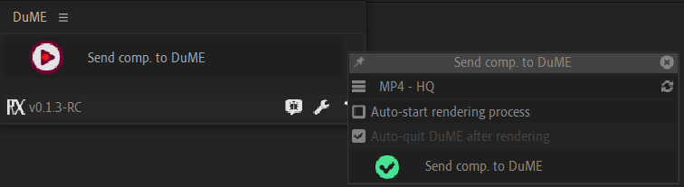
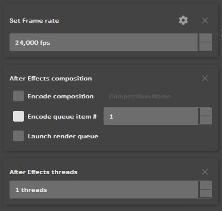

After Effects Rendering¶
After Effects Rendering¶
From After Effects, using the script¶
Install¶
Before you can use the script, you need to set the path to DuME. Go to the script settings by clicking on the button at the bottom right, then set the path to DuME.
Use¶

The Send Comp. to DuME button will launch DuME and add the active composition to it.
Click on the options button to adjust a few settings.

All the options you change there will be kept even if you restart After Effects. The list of presets is pulled from DuME when the script is opened, use the update button at the right if you’ve made changes to the list of presets in DuMe after you have opened the script.
Add a composition directly to DuME¶
Drop or open an After Effects project on the input side of DuME.

Warning
The framerate is not (yet) detected by DuME, don’t forget to set it manually.
There are two ways to choose which composition will be rendered: either set the exact composition name, or add the composition to the render queue in After Effects, and set the index of the render queue item in DuME.
Tip
A quick way to do this is to make sure the render queue in After Effects is empty, then add the composition you want to render. DuME automatically renders the first (and only in this case) item in the queue.
Warning
When rendering an item from the render queue, it has to be enabled in the queue in After Effects, otherwise the After Effects render engine will just ignore it.
You can also use DuME to render the whole queue, but in this case DuME cannot automatically transcode the result to other formats.
You have the option to use several threads at once when rendering After Effects projects, but be careful as this may not work correctly if the number of threads is too high, especially with projects needing a lot of memory.
Warning
Do not disable color management when rendering an After Effects composition, as After Effects compositions are rendered in a linear RGB color space and not in the output color space.
Add sound to an After Effects composition¶
You can add another input to add sound to an After Effects composition. See Adding / Changing streams